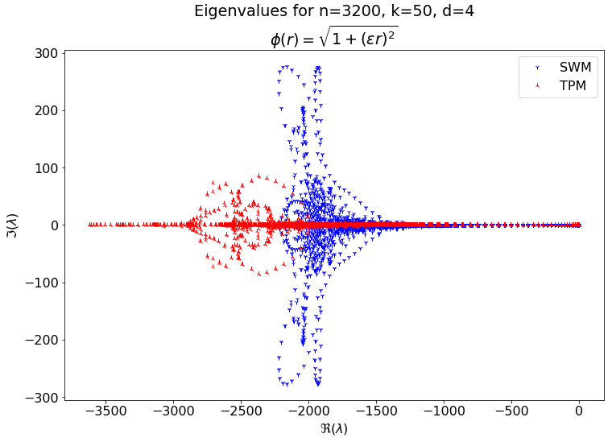
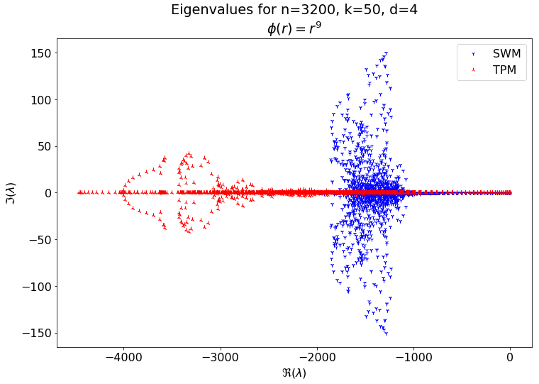
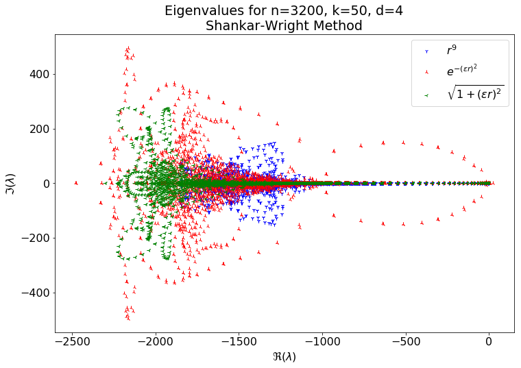
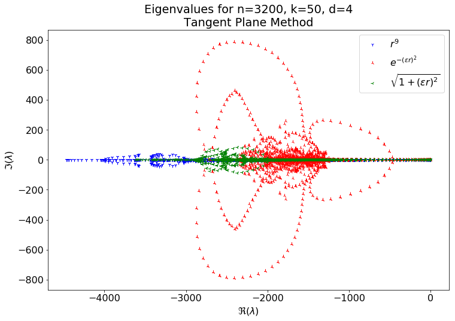
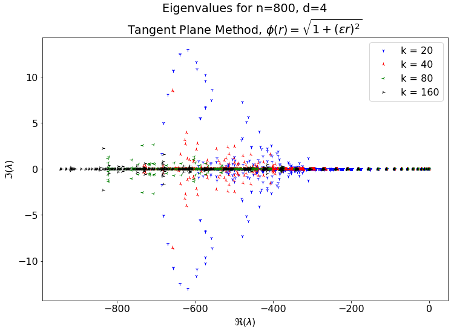

Reviewed convergece plots for Tangent Plane Method vs Shankar-Wright method. Addressed some of Sage's mistakes with Symmetric OGr.
- Sage's Tasks
- For Poster
- Code
- Writing
- Sage's List
- Meeting Followup
- References
Sage's Tasks
For Poster
- Symmetric RBF-OGr
- Implement
- Include Polynomials
- Solutions on a Torus
- MLS on tangent-plane
Code
- Account for the hessian to fix the code for the RBF Symmetric OGr method.
- Implement time-stepping.
- Test RBF OGr interpolation.
- Test surface diffusion methods on a torus.
- Become familiar with Varun's repo.
Writing
- Write Radial Basis Function Article
- Write the theorem for exactness.
- Write RBF-FD article.
- Write RBF-FD Projection Method article.
- Write RBF-OGr article.
- Add local approximation to RBF Interpolation article.
Sage's List
- Pick some test problems to solve on surfaces. I suggest
- Diffusion of sum of Gaussians
- Diffusion on torus
- Implement local OGRr method for surfaces
- Use exact normals
- Generate convergence results on the test problems from 1.
- Examine eigenvalues of the discrete Laplace-Beltrami operator.
- Implement Shankar-Wright RBF-FD method using RBF+polynomials (in $\RR^3$)
- Use exact normals
- Generate convergence results on the test problems from 1.
- Examine eigenvalues of the discrete Laplace-Beltrami operator.
- Implement RBF-FD tangent-plane method using RBF+polynomials (in $\RR^2$)
- Use exact normals
- Generate convergence results on the test problems from 1.
- Examine eigenvalues of the discrete Laplace-Beltrami operator.
- Implement moving least squares (MLS) method on tangent-plane using polynomials (in $\RR^2$)
- Use exact normals
- Generate convergence results on the test problems from 1.
- Examine eigenvalues of the discrete Laplace-Beltrami operator.
- Create poster with results from 2-4
- Include 5 if time permits.
Meeting Followup
Eigenvalue Plots
In the last meeting Grady requested some plots showing the eigenvalues of the weight matrices for each method. The plots below show these eigenvalues for spiral nodes on a sphere. Where not specified, the shape paramater was optimized. In the plots below $n$ is the total number of points, $k$ is the stencil size, and $d$ is the degree of polynomials appended.
    The plot above corresponds to a convergence plot for the meeting before last. It appears below for reference.

Symmetric OGr
I think there are some mistakes in my derivations. Presently the code isn't working.
References